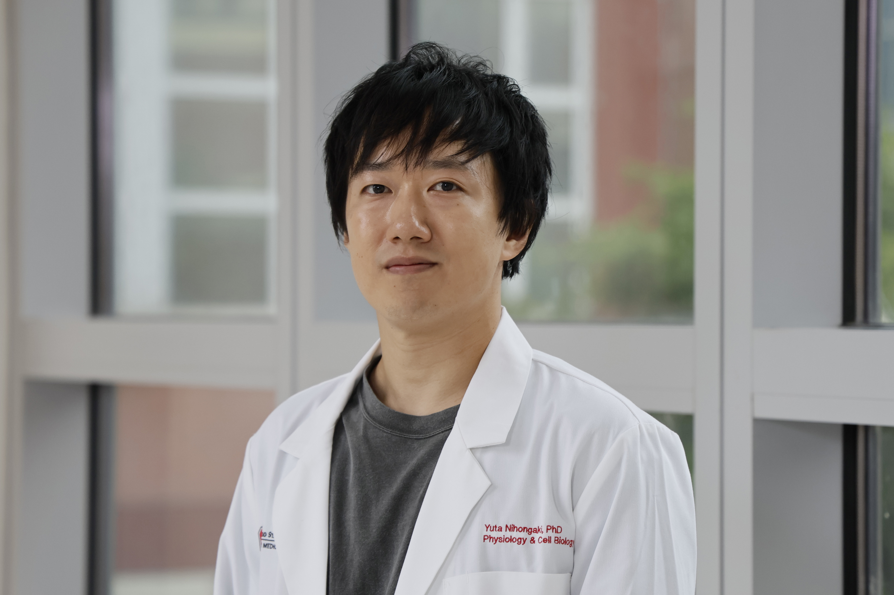
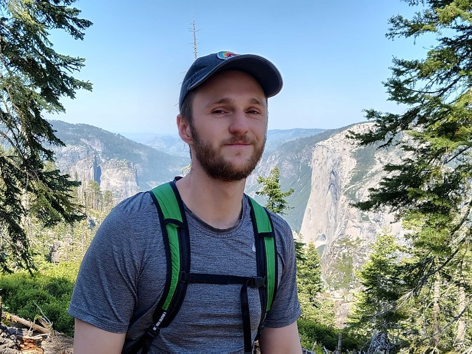

An engineered streptavidin condensate platform for chemically inducible control of endogenous proteins in mammalian cells
bioRxiv 2026
DOI ↗
The Nihongaki Lab sits at the intersection of cell biology and synthetic biology. We build genetically encoded tools that manipulate and visualize biomolecular activities with high precision, and we use them to ask how cells control and exploit these activities to produce biological outputs.
Microtubules are cytoskeletal filaments and play roles in vital cellular processes. While it is known that microtubules in living cells are under mechanically stressful environments, the functional and causal relationship between microtubules and mechanical forces remains largely elusive. Our goal is to elucidate how microtubules respond to compressive forces, how mechanical actuators such as motor proteins and mechanical enzymes exert forces on microtubules, and how these mechanical events are involved in cellular and physiological functions.
Groundbreaking discoveries in biology are invariably preceded by advancements in technology. We are engineering inducible molecular tools — to manipulate and visualize biomolecular activities with high precision for addressing biological questions in microtubule cell biology and other fields.


If you have a background in cell biology, biochemistry or live-cell imaging with quantitative image analysis — and you are excited about microtubule cell biology as much as applying novel molecular tools into your research — send a CV and a short note about what you would like to work on.
We host lab rotations for OSU's PhD students in the Biomedical Sciences Graduate Program, the Molecular, Cellular & Developmental Biology Program, the Biophysics Program, or the Ohio State Biochemistry Program. Please reach out Yuta for a rotation opportunity.
OSU undergraduates interested in hands-on bench work for at least one year can email a brief statement of interest with your career goals and a CV.